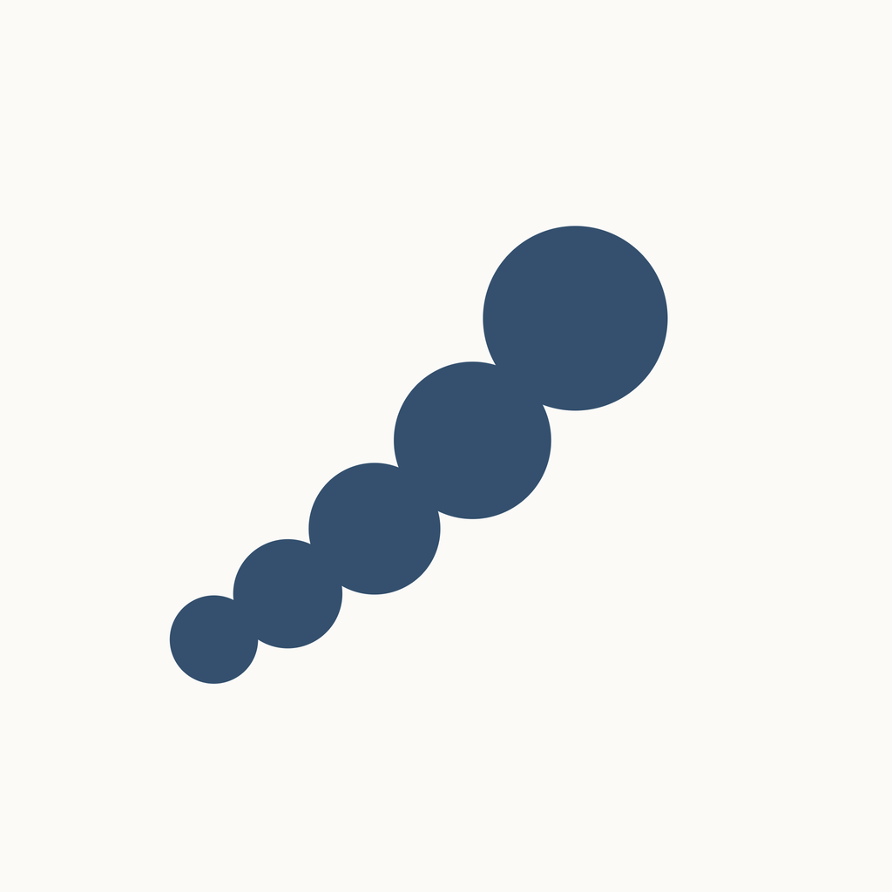
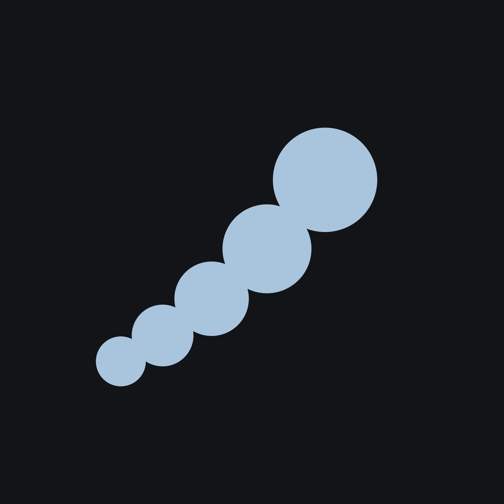
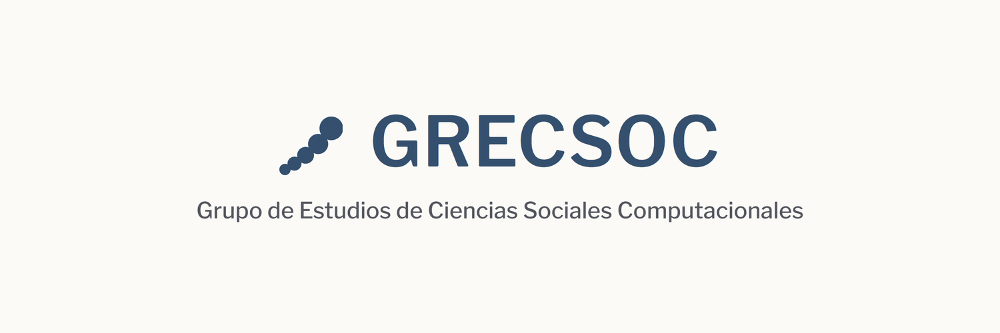
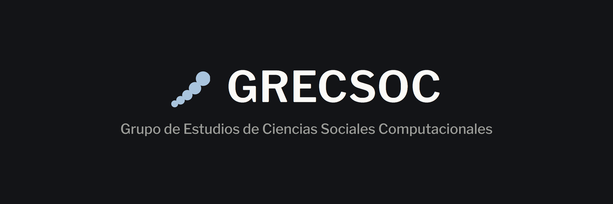
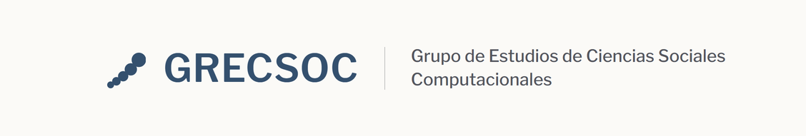
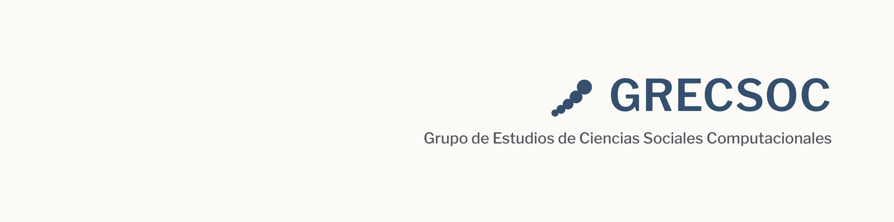
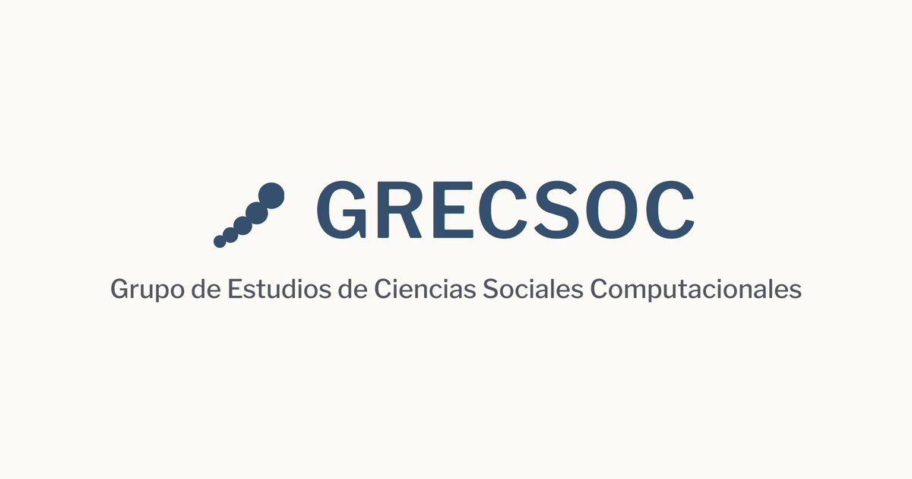
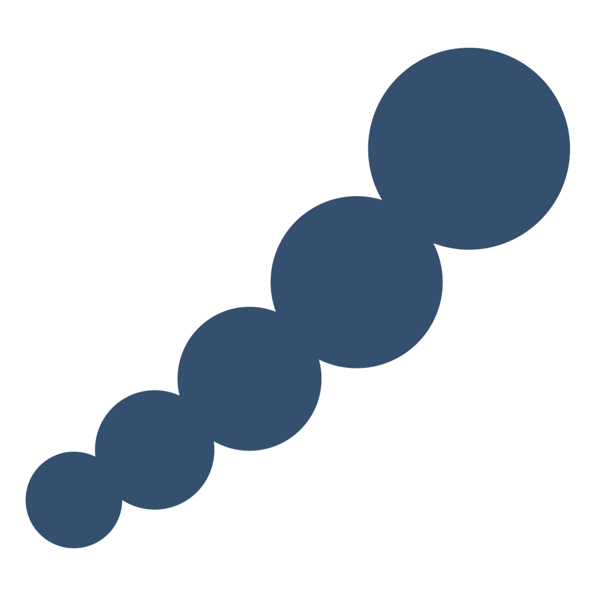
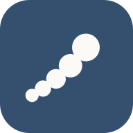

<meta charset="utf-8">
<meta name="viewport" content="width=device-width, initial-scale=1">
<title>GRECSOC Brand Assets — Enjambre</title>
<meta name="description" content="The chosen GRECSOC mark (18 · Enjambre), redrawn as final artwork, with ready-to-upload social media assets for X, LinkedIn and Instagram.">
<link rel="icon" href="data:image/svg+xml,%3Csvg xmlns='http://www.w3.org/2000/svg' viewBox='0 0 100 100'%3E%3Crect width='100' height='100' rx='22' fill='%2334506E'/%3E%3Cg fill='%23FBFAF7' transform='translate(-3 1)'%3E%3Ccircle cx='27.1' cy='70.7' r='5'/%3E%3Ccircle cx='35.3' cy='65.6' r='6.1'/%3E%3Ccircle cx='45.1' cy='58.3' r='7.4'/%3E%3Ccircle cx='56' cy='48.4' r='8.8'/%3E%3Ccircle cx='67.6' cy='34.7' r='10.4'/%3E%3C/g%3E%3C/svg%3E">
<link rel="preconnect" href="https://fonts.googleapis.com">
<link rel="preconnect" href="https://fonts.gstatic.com" crossorigin>
<link rel="stylesheet" href="https://fonts.googleapis.com/css2?family=Newsreader:ital,wght@0,400;0,500;1,400&display=swap">
<link rel="stylesheet" href="https://fonts.googleapis.com/css2?family=Libre+Franklin:wght@400;500;600;700&display=swap">
<link rel="stylesheet" href="https://fonts.googleapis.com/css2?family=IBM+Plex+Mono:wght@400;500&display=swap">

<style>
:root{
  --paper:#FBFAF7; --paper-2:#F2EFE8; --ink:#17181C; --ink-soft:#54565E;
  --line:#E3E0D7; --card:#FFFFFF; --accent:#34506E;
  --f-display:"Newsreader", Georgia, serif;
  --f-body:"Libre Franklin", system-ui, -apple-system, Segoe UI, Roboto, sans-serif;
  --f-mono:"IBM Plex Mono", ui-monospace, Menlo, monospace;
  --step--1:.8125rem; --step-0:1rem; --step-1:1.1875rem; --step-4:2.375rem;
  --measure:65ch; --pad:clamp(1.25rem, 5vw, 4.5rem);
}
@media (prefers-color-scheme: dark){
  :root:not([data-theme="light"]){
    --paper:#131417; --paper-2:#1A1B1F; --ink:#ECEBE5; --ink-soft:#9B9C98;
    --line:#2B2C31; --card:#191A1E; --accent:#93B2D2;
  }
}
:root[data-theme="dark"]{
  --paper:#131417; --paper-2:#1A1B1F; --ink:#ECEBE5; --ink-soft:#9B9C98;
  --line:#2B2C31; --card:#191A1E; --accent:#93B2D2;
}
*,*::before,*::after{box-sizing:border-box}
body{margin:0;background:var(--paper);color:var(--ink);font-family:var(--f-body);font-size:var(--step-0);line-height:1.6;-webkit-font-smoothing:antialiased}
h1,h2,h3{margin:0;line-height:1.12;text-wrap:balance;font-weight:600}
p{margin:0}
a{color:inherit}
img{max-width:100%;display:block}
:focus-visible{outline:2px solid var(--accent);outline-offset:3px}
.wrap{max-width:1180px;margin:0 auto;padding-inline:var(--pad)}
.prose{max-width:var(--measure)}
.eyebrow{font-family:var(--f-mono);font-size:var(--step--1);letter-spacing:.14em;text-transform:uppercase;color:var(--ink-soft);margin:0}

.topbar{position:sticky;top:0;z-index:50;background:color-mix(in srgb,var(--paper) 88%,transparent);backdrop-filter:blur(10px);border-bottom:1px solid var(--line)}
.topbar__row{display:flex;align-items:center;gap:1rem;min-height:56px}
.brandmark{display:flex;align-items:center;gap:.6rem;font-family:var(--f-mono);font-size:var(--step--1);letter-spacing:.08em;text-transform:uppercase;font-weight:500;white-space:nowrap;text-decoration:none;color:inherit}
.brandmark svg{width:20px;height:20px}
.topnav{margin-left:auto;display:flex;gap:.15rem;flex-wrap:wrap;font-family:var(--f-mono);font-size:var(--step--1)}
.topnav a{text-decoration:none;color:var(--ink-soft);padding:.35rem .55rem;border-radius:4px}
.topnav a:hover{color:var(--ink);background:var(--paper-2)}
.themetoggle{background:none;border:1px solid var(--line);color:var(--ink-soft);font-family:var(--f-mono);font-size:.72rem;letter-spacing:.06em;padding:.35rem .6rem;border-radius:5px;cursor:pointer}
.themetoggle:hover{color:var(--ink)}

.hero{padding-block:clamp(3rem,8vw,5.5rem) clamp(2rem,5vw,3.5rem);border-bottom:1px solid var(--line)}
.hero h1{font-family:var(--f-display);font-weight:400;font-size:clamp(2.25rem,6vw,3.75rem);letter-spacing:-.015em;margin:.6rem 0 1.3rem;max-width:16ch}
.hero h1 em{font-style:italic;color:var(--accent)}
.hero__lede{font-size:var(--step-1);color:var(--ink-soft);max-width:60ch}

.section{padding-block:clamp(2.5rem,7vw,4.5rem);border-bottom:1px solid var(--line)}
.section__head{display:flex;flex-direction:column;gap:.8rem;margin-bottom:2rem}
.section__head h2{font-family:var(--f-display);font-weight:400;font-size:var(--step-4);letter-spacing:-.01em}
.section__head p{color:var(--ink-soft);max-width:var(--measure)}

/* mark specimens */
.specimens{display:grid;gap:1.25rem;grid-template-columns:repeat(auto-fit,minmax(240px,1fr))}
.spec{border:1px solid var(--line);border-radius:12px;overflow:hidden}
.spec__art{aspect-ratio:1.6/1;display:grid;place-items:center;padding:2rem}
.spec__art svg{width:52%}
.spec__art--paper{background:#FBFAF7}
.spec__art--ink{background:#131417}
.spec__art--navy{background:#34506E}
.spec__cap{font-family:var(--f-mono);font-size:var(--step--1);color:var(--ink-soft);padding:.7rem .9rem;border-top:1px solid var(--line)}

.clearspace{display:flex;flex-wrap:wrap;gap:2rem;align-items:center;margin-top:1rem}
.clearbox{position:relative;padding:16%;border:1px dashed var(--accent);border-radius:8px;background:var(--paper-2)}
.clearbox svg{width:120px;display:block;color:var(--ink)}
.minrow{display:flex;align-items:flex-end;gap:1.4rem}
.minrow figure{margin:0;text-align:center}
.minrow svg{color:var(--ink);display:block;margin:0 auto .4rem}
.minrow figcaption{font-family:var(--f-mono);font-size:.72rem;color:var(--ink-soft)}

/* palette */
.pal{display:grid;gap:.75rem;grid-template-columns:repeat(auto-fit,minmax(190px,1fr));margin-top:.5rem}
.pal div{border:1px solid var(--line);border-radius:10px;overflow:hidden;font-family:var(--f-mono);font-size:var(--step--1)}
.pal i{display:block;height:74px}
.pal b{display:block;color:var(--ink);font-weight:500;padding:.6rem .8rem 0}
.pal span{display:block;color:var(--ink-soft);padding:0 .8rem .7rem}

/* downloads */
.dl{display:grid;gap:1.1rem;grid-template-columns:repeat(auto-fill,minmax(280px,1fr));margin-top:.5rem}
.asset{display:flex;flex-direction:column;border:1px solid var(--line);border-radius:12px;overflow:hidden;background:var(--card)}
.asset__prev{background:var(--paper-2);border-bottom:1px solid var(--line);padding:0}
.asset__prev img{width:100%;height:auto}
.asset__body{padding:1rem 1.05rem 1.1rem;display:flex;flex-direction:column;gap:.35rem;flex:1}
.asset__name{font-family:var(--f-mono);font-size:var(--step--1);color:var(--ink);word-break:break-all}
.asset__meta{font-size:var(--step--1);color:var(--ink-soft);line-height:1.5}
.asset__links{margin-top:auto;padding-top:.7rem;display:flex;gap:.9rem;font-family:var(--f-mono);font-size:var(--step--1)}
.asset__links a{color:var(--accent);font-weight:500;text-decoration:none}
.asset__links a:hover{text-decoration:underline}

.note{margin-top:2rem;padding:1.1rem 1.25rem;border-left:3px solid var(--accent);background:var(--paper-2);font-size:var(--step--1);color:var(--ink-soft);max-width:var(--measure)}
.note b{color:var(--ink)}
ul.plain{margin:.4rem 0 0;padding-left:1.15rem;color:var(--ink-soft);font-size:var(--step--1);line-height:1.6}

.foot{padding-block:2.25rem}
.foot p{font-family:var(--f-mono);font-size:var(--step--1);color:var(--ink-soft);max-width:74ch;line-height:1.7}
.foot a{color:var(--accent)}
</style>

<header class="topbar">
  <div class="wrap topbar__row">
    <a class="brandmark" href="../" aria-label="GRECSOC — index">
      <svg viewBox="0 0 100 100" aria-hidden="true"><g fill="currentColor" transform="translate(-3.4 1.1)"><circle cx="24.5" cy="73" r="5.5"/><circle cx="33.7" cy="67.3" r="6.8"/><circle cx="44.5" cy="59.2" r="8.2"/><circle cx="56.7" cy="48.2" r="9.8"/><circle cx="69.5" cy="33" r="11.5"/></g></svg>
      GRECSOC
    </a>
    <nav class="topnav" aria-label="Pages">
      <a href="../design_system/">Design systems&nbsp;↗</a>
      <a href="../logos/">Logos&nbsp;↗</a>
      <a href="#mark">Mark</a>
      <a href="#downloads">Downloads</a>
    </nav>
    <button class="themetoggle" id="themetoggle" type="button">Theme</button>
  </div>
</header>

<main>
  <section class="hero">
    <div class="wrap">
      <p class="eyebrow">Visual identity · chosen mark · 18 Enjambre</p>
      <h1>The mark, and the <em>social kit</em>.</h1>
      <p class="hero__lede">
        <b>18 · Enjambre</b> — five points growing along a rising curve — was chosen from the
        <a href="../logos/" style="color:var(--accent)">twenty concepts</a>. It is redrawn here as
        final artwork, with ready-to-upload assets for X, LinkedIn and Instagram. Colour is the
        shared shell palette for now; the wordmark lock-up is finalised once the
        <a href="../design_system/" style="color:var(--accent)">design direction</a> is picked.
      </p>
    </div>
  </section>

  <section class="section" id="mark">
    <div class="wrap">
      <div class="section__head">
        <p class="eyebrow">01 — The mark</p>
        <h2>Enjambre, in three grounds</h2>
        <p>One geometry — beads that touch, growing along a curve. Navy on light, pale blue on
          dark (or paper on a navy fill). Vector sources are in <code>brand/mark/</code>.</p>
      </div>

      <div class="specimens">
        <figure class="spec" style="margin:0">
          <div class="spec__art spec__art--paper">
            <svg viewBox="19 21.5 62 57" aria-label="Enjambre, navy"><g fill="#34506E"><circle cx="24.5" cy="73" r="5.5"/><circle cx="33.7" cy="67.3" r="6.8"/><circle cx="44.5" cy="59.2" r="8.2"/><circle cx="56.7" cy="48.2" r="9.8"/><circle cx="69.5" cy="33" r="11.5"/></g></svg>
          </div>
          <figcaption class="spec__cap">Navy #34506E on paper</figcaption>
        </figure>
        <figure class="spec" style="margin:0">
          <div class="spec__art spec__art--ink">
            <svg viewBox="19 21.5 62 57" aria-label="Enjambre, pale blue"><g fill="#A9C4DD"><circle cx="24.5" cy="73" r="5.5"/><circle cx="33.7" cy="67.3" r="6.8"/><circle cx="44.5" cy="59.2" r="8.2"/><circle cx="56.7" cy="48.2" r="9.8"/><circle cx="69.5" cy="33" r="11.5"/></g></svg>
          </div>
          <figcaption class="spec__cap">Pale blue #A9C4DD on ink</figcaption>
        </figure>
        <figure class="spec" style="margin:0">
          <div class="spec__art spec__art--navy">
            <svg viewBox="19 21.5 62 57" aria-label="Enjambre, paper"><g fill="#FBFAF7"><circle cx="24.5" cy="73" r="5.5"/><circle cx="33.7" cy="67.3" r="6.8"/><circle cx="44.5" cy="59.2" r="8.2"/><circle cx="56.7" cy="48.2" r="9.8"/><circle cx="69.5" cy="33" r="11.5"/></g></svg>
          </div>
          <figcaption class="spec__cap">Paper #FBFAF7 on navy fill</figcaption>
        </figure>
      </div>

      <div class="section__head" style="margin-top:3rem">
        <p class="eyebrow">Clear space &amp; minimum size</p>
      </div>
      <div class="clearspace">
        <div>
          <div class="clearbox">
            <svg viewBox="19 21.5 62 57" aria-hidden="true"><g fill="currentColor"><circle cx="24.5" cy="73" r="5.5"/><circle cx="33.7" cy="67.3" r="6.8"/><circle cx="44.5" cy="59.2" r="8.2"/><circle cx="56.7" cy="48.2" r="9.8"/><circle cx="69.5" cy="33" r="11.5"/></g></svg>
          </div>
          <p class="asset__meta" style="margin-top:.6rem">Keep clear space of at least the largest bead's
            diameter on every side.</p>
        </div>
        <div class="minrow">
          <figure>
            <svg width="16" viewBox="19 21.5 62 57" aria-hidden="true"><g fill="currentColor"><circle cx="24.5" cy="73" r="5.5"/><circle cx="33.7" cy="67.3" r="6.8"/><circle cx="44.5" cy="59.2" r="8.2"/><circle cx="56.7" cy="48.2" r="9.8"/><circle cx="69.5" cy="33" r="11.5"/></g></svg>
            <figcaption>16 px — floor</figcaption>
          </figure>
          <figure>
            <svg width="24" viewBox="19 21.5 62 57" aria-hidden="true"><g fill="currentColor"><circle cx="24.5" cy="73" r="5.5"/><circle cx="33.7" cy="67.3" r="6.8"/><circle cx="44.5" cy="59.2" r="8.2"/><circle cx="56.7" cy="48.2" r="9.8"/><circle cx="69.5" cy="33" r="11.5"/></g></svg>
            <figcaption>24 px — comfortable</figcaption>
          </figure>
          <figure>
            <svg width="40" viewBox="19 21.5 62 57" aria-hidden="true"><g fill="currentColor"><circle cx="24.5" cy="73" r="5.5"/><circle cx="33.7" cy="67.3" r="6.8"/><circle cx="44.5" cy="59.2" r="8.2"/><circle cx="56.7" cy="48.2" r="9.8"/><circle cx="69.5" cy="33" r="11.5"/></g></svg>
            <figcaption>40 px</figcaption>
          </figure>
        </div>
      </div>

      <div class="note">
        <b>Don't:</b>
        <ul class="plain">
          <li>recolour outside the palette, add a gradient, outline or shadow;</li>
          <li>rotate, re-space or re-size individual beads, or add/remove one;</li>
          <li>place the navy mark on a mid-tone or busy photo without the paper or ink version;</li>
          <li>stretch — the mark is not square, keep its proportions.</li>
        </ul>
      </div>
    </div>
  </section>

  <section class="section" id="palette">
    <div class="wrap">
      <div class="section__head">
        <p class="eyebrow">02 — Colour</p>
        <h2>Neutral palette (provisional)</h2>
        <p>The shared shell palette used across the identity drafts. A direction-specific palette
          replaces this once A–E is chosen.</p>
      </div>
      <div class="pal">
        <div><i style="background:#34506E"></i><b>Navy</b><span>#34506E · primary mark</span></div>
        <div><i style="background:#17181C"></i><b>Ink</b><span>#17181C · text, dark ground</span></div>
        <div><i style="background:#FBFAF7;border-bottom:1px solid var(--line)"></i><b>Paper</b><span>#FBFAF7 · light ground</span></div>
        <div><i style="background:#A9C4DD"></i><b>Pale blue</b><span>#A9C4DD · mark on dark</span></div>
      </div>
    </div>
  </section>

  <section class="section" id="wordmark">
    <div class="wrap">
      <div class="section__head">
        <p class="eyebrow">03 — Wordmark lock-up</p>
        <h2>Provisional</h2>
        <p>Set in Libre Franklin as a placeholder. Both the typeface and the wording
          (<code>GRECSOC</code> is a working acronym — see <code>docs/grecsoc.md</code>) are
          confirmed with the design direction. Use the mark alone until then.</p>
      </div>
      <div class="specimens">
        <figure class="spec" style="margin:0">
          <div class="spec__art spec__art--paper" style="aspect-ratio:auto;padding:2rem 2.2rem">
            
          </div>
          <figcaption class="spec__cap">lockup/grecsoc-horizontal.svg</figcaption>
        </figure>
        <figure class="spec" style="margin:0">
          <div class="spec__art spec__art--paper" style="aspect-ratio:auto;padding:2rem">
            
          </div>
          <figcaption class="spec__cap">lockup/grecsoc-stacked.svg</figcaption>
        </figure>
      </div>
    </div>
  </section>

  <section class="section" id="downloads">
    <div class="wrap">
      <div class="section__head">
        <p class="eyebrow">04 — Downloads</p>
        <h2>Ready to upload</h2>
        <p>PNGs are exported at the size each platform wants. Upload the largest given size — the
          platform downsizes. Every raster asset comes in a light and a dark version; pick one and
          keep it consistent across the three accounts.</p>
      </div>

      <h3 style="font-family:var(--f-mono);font-size:var(--step--1);letter-spacing:.08em;text-transform:uppercase;color:var(--ink-soft);margin:1.5rem 0 .5rem">Profile pictures — X, LinkedIn, Instagram</h3>
      <div class="dl">
        <div class="asset">
          <div class="asset__prev"></div>
          <div class="asset__body">
            <span class="asset__name">avatar-light-1024.png</span>
            <span class="asset__meta">1024×1024 · navy on paper · displays as a circle</span>
            <span class="asset__links"><a href="social/avatar-light-1024.png" download>Download</a><a href="social/avatar-light-400.png" download>400px</a></span>
          </div>
        </div>
        <div class="asset">
          <div class="asset__prev"></div>
          <div class="asset__body">
            <span class="asset__name">avatar-dark-1024.png</span>
            <span class="asset__meta">1024×1024 · pale blue on ink · displays as a circle</span>
            <span class="asset__links"><a href="social/avatar-dark-1024.png" download>Download</a><a href="social/avatar-dark-400.png" download>400px</a></span>
          </div>
        </div>
      </div>

      <h3 style="font-family:var(--f-mono);font-size:var(--step--1);letter-spacing:.08em;text-transform:uppercase;color:var(--ink-soft);margin:2rem 0 .5rem">X / Twitter header — 1500×500</h3>
      <div class="dl">
        <div class="asset">
          <div class="asset__prev"></div>
          <div class="asset__body">
            <span class="asset__name">x-header-light.png</span>
            <span class="asset__meta">1500×500 · content centred, clear of the avatar overlap</span>
            <span class="asset__links"><a href="social/x-header-light.png" download>Download</a></span>
          </div>
        </div>
        <div class="asset">
          <div class="asset__prev"></div>
          <div class="asset__body">
            <span class="asset__name">x-header-dark.png</span>
            <span class="asset__meta">1500×500</span>
            <span class="asset__links"><a href="social/x-header-dark.png" download>Download</a></span>
          </div>
        </div>
      </div>

      <h3 style="font-family:var(--f-mono);font-size:var(--step--1);letter-spacing:.08em;text-transform:uppercase;color:var(--ink-soft);margin:2rem 0 .5rem">LinkedIn — company cover 1128×191 · personal background 1584×396</h3>
      <div class="dl">
        <div class="asset">
          <div class="asset__prev"></div>
          <div class="asset__body">
            <span class="asset__name">linkedin-cover-light.png</span>
            <span class="asset__meta">1128×191 · company page · content kept right of the logo overlay</span>
            <span class="asset__links"><a href="social/linkedin-cover-light.png" download>Download</a><a href="social/linkedin-cover-dark.png" download>Dark</a></span>
          </div>
        </div>
        <div class="asset">
          <div class="asset__prev"></div>
          <div class="asset__body">
            <span class="asset__name">linkedin-personal-light.png</span>
            <span class="asset__meta">1584×396 · personal profile · content kept right, clear of the photo</span>
            <span class="asset__links"><a href="social/linkedin-personal-light.png" download>Download</a><a href="social/linkedin-personal-dark.png" download>Dark</a></span>
          </div>
        </div>
      </div>

      <h3 style="font-family:var(--f-mono);font-size:var(--step--1);letter-spacing:.08em;text-transform:uppercase;color:var(--ink-soft);margin:2rem 0 .5rem">Link preview (Open Graph) — 1200×630</h3>
      <div class="dl">
        <div class="asset">
          <div class="asset__prev"></div>
          <div class="asset__body">
            <span class="asset__name">og-light.png</span>
            <span class="asset__meta">1200×630 · shown when grecsoc.github.io is shared · already wired into the homepage</span>
            <span class="asset__links"><a href="social/og-light.png" download>Download</a><a href="social/og-dark.png" download>Dark</a></span>
          </div>
        </div>
      </div>

      <h3 style="font-family:var(--f-mono);font-size:var(--step--1);letter-spacing:.08em;text-transform:uppercase;color:var(--ink-soft);margin:2rem 0 .5rem">Mark only — transparent background</h3>
      <div class="dl">
        <div class="asset">
          <div class="asset__prev" style="background:repeating-conic-gradient(#00000010 0% 25%,transparent 0% 50%) 50% / 22px 22px"></div>
          <div class="asset__body">
            <span class="asset__name">mark-navy-1024.png</span>
            <span class="asset__meta">1024×1024 · transparent · for placing on your own colour</span>
            <span class="asset__links"><a href="social/mark-navy-1024.png" download>Navy</a><a href="social/mark-paper-1024.png" download>Paper</a><a href="mark/enjambre-mark.svg" download>SVG</a></span>
          </div>
        </div>
      </div>

      <h3 style="font-family:var(--f-mono);font-size:var(--step--1);letter-spacing:.08em;text-transform:uppercase;color:var(--ink-soft);margin:2rem 0 .5rem">Favicons &amp; app icon</h3>
      <div class="dl">
        <div class="asset">
          <div class="asset__prev" style="display:grid;place-items:center;padding:1.5rem"></div>
          <div class="asset__body">
            <span class="asset__name">favicon.svg · favicon-32.png · apple-touch-icon-180.png · icon-512.png</span>
            <span class="asset__meta">Navy rounded square, paper beads. Already wired into the site pages.</span>
            <span class="asset__links"><a href="favicon.svg" download>SVG</a><a href="favicon/favicon-32.png" download>32</a><a href="favicon/apple-touch-icon-180.png" download>180</a><a href="favicon/icon-512.png" download>512</a></span>
          </div>
        </div>
      </div>
    </div>
  </section>

  <section class="section" id="regen">
    <div class="wrap">
      <div class="section__head">
        <p class="eyebrow">05 — Regenerating</p>
        <h2>If a value changes</h2>
        <p>Everything on this page is generated from one script. The geometry, the palette and the
          descriptor line all live at the top of <code>brand/generate.mjs</code>.</p>
      </div>
      <div class="note" style="max-width:none">
        <pre style="margin:0;white-space:pre-wrap;font-family:var(--f-mono);font-size:var(--step--1)">mkdir gen &amp;&amp; cd gen &amp;&amp; npm init -y &amp;&amp; npm i puppeteer sharp
node ../brand/generate.mjs ../brand</pre>
      </div>
      <p class="asset__meta" style="margin-top:1rem">Re-exports <code>brand/social/</code> and
        <code>brand/favicon/</code>. See <code>brand/README.md</code>.</p>
    </div>
  </section>
</main>

<footer class="foot">
  <div class="wrap">
    <p>
      GRECSOC · brand assets · mark 18 Enjambre, chosen from the
      <a href="../logos/">logo review</a>. Palette neutral and wordmark lock-up provisional pending
      the <a href="../design_system/">design direction</a> and the confirmed name. Companion to the
      <a href="../">identity hub</a>.
    </p>
  </div>
</footer>

<script>
(function(){
  var KEY="grecsoc-theme";
  var root=document.documentElement;
  var btn=document.getElementById("themetoggle");
  function sysDark(){return window.matchMedia && window.matchMedia("(prefers-color-scheme: dark)").matches;}
  function current(){return root.getAttribute("data-theme") || (sysDark()?"dark":"light");}
  try{ var saved=localStorage.getItem(KEY); if(saved){root.setAttribute("data-theme",saved);} }catch(e){}
  function label(){ btn.textContent = current()==="dark" ? "Light" : "Dark"; }
  label();
  btn.addEventListener("click",function(){
    var next = current()==="dark" ? "light" : "dark";
    root.setAttribute("data-theme",next);
    try{ localStorage.setItem(KEY,next); }catch(e){}
    label();
  });
})();
</script>
